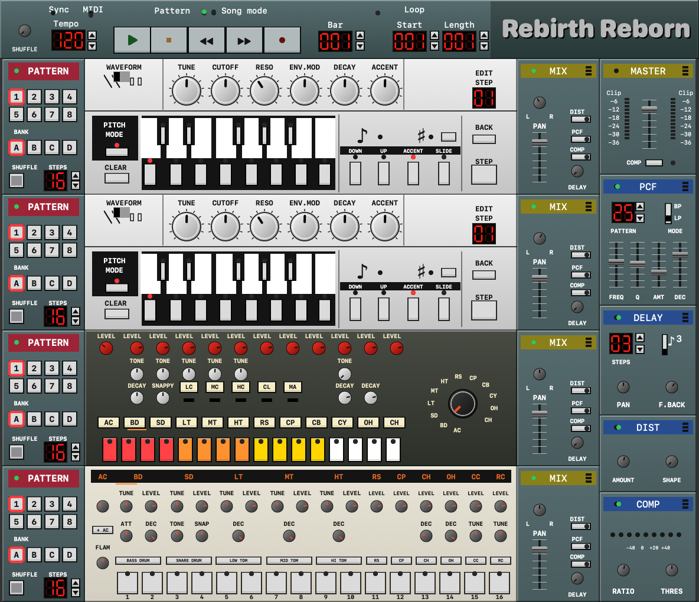

Double acid.
Two bass voices with saw and square, resonance, envelope modulation, accent and slide. A fresh band-limited oscillator and nonlinear filter, with optional 2× oversampling.
VERSION 0.1 / NATIVE MACOS
Two basslines. Twenty-two drums.
One more night.
The compact rack you remember, rebuilt for the machine on your desk. Fresh synthesis. Familiar moves. Straight into the loop.

01 / THE RACK
Start with a kick. Find a phrase. Open the filter until the room changes. Everything you need sits in one compact, scalable rack.
Two bass voices with saw and square, resonance, envelope modulation, accent and slide. A fresh band-limited oscillator and nonlinear filter, with optional 2× oversampling.
Eleven voices per drum machine. Own synthesized kicks, snares, hats and percussion, with decay, tune, accents, strong hits and flam. No sample download required.
Distortion, delay, linked compression and a pattern-controlled filter. Fifty-five newly generated rhythms and motion shapes keep a simple loop changing.
Four pattern lanes. Insert, duplicate and remove bars.
Notes, controls and pattern changes. Undo included.
MIDI Learn, external clock and live playing.
Presets, native sessions and full-song WAV export.
02 / A LITTLE AFTERHOURS
A tiny browser acid sketch.
The full rack lives in the native app.
Click steps. Move the filter.
All audio is synthesized in your browser.
03 / MAKE IT YOURS
An independent community remake, built in Swift and C++. No original application files, recordings, songs, Mod archives or extracted lookup tables are distributed.
The public engine has its own sound. The interface is drawn in code. Bring your own ideas, not an old installer.
Read the full guide ↗macOS 13+ and Apple Command Line Tools.
git clone https://github.com/derpaile/rebirth-reborn.git
cd rebirth-reborn
bash RebirthReborn/build-app.sh
open "RebirthReborn/dist/Rebirth Reborn.app"Keep the pattern.
Change the night.